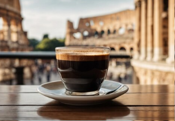

Cafés de Origem Única
A Geografia em Cada Xícara
Cada café é escolhido a dedo, vindo de produtores que compartilham nossa paixão pela qualidade e sustentabilidade.

Etiópia · Yirgacheffe
Yirgacheffe Natural
Edição LimitadaFloral, amora, champanhe. Torra clara que exalta o terroir único desta região etíope.

Brasil · Mantiqueira
Mantiqueira Reserva
Mais VendidoChocolate amargo, caramelo, nozes. Corpo pleno e acidez equilibrada da Serra da Mantiqueira.

Panamá · Boquete
Geisha Limited
RaroJasmim, pêssego branco, mel. A variedade mais valorizada do mundo, em torra artesanal.